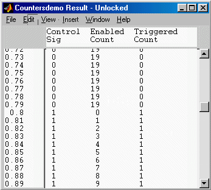

| User Function Reference |
|
Generate a scrolled window for displaying data.
Syntax
dispdlg(Data) dispdlg(Data, Title) dispdlg(Data, Title, Lock) dispdlg([], Title, Lock) h=dispdlg(...)
Description
dispdlg displays Data in a resizable scrolled figure window. In the window title
bar is a title and Lock status. On subsequent calls, if another window with the
same Title exists which is unlocked, it will enter the Data in that
window, otherwise it will create a new window for the data. The menu can be used
to set the Lock status. If printed it will produce only the data currently in view.
dispdlg(Data) displays the Data (text or matrix) in a window.
Data may be a cell array containing:
a cell vector of row titles (optional)
a cell vector of column titles (optional)
a cell array of strings/numbers
Data may be just a string/numeric array
Data may be a structure of the form produced by sim.
dispdlg(Data, Title) where
Title is a string title for the window. NB don't use ' - Locked' or
' - Unlocked' in Title.
dispdlg(Data, Title, Lock) where
Lock is whether to allow a subsequent dispdlg call with the
same title to use this figure window (default is 0 which
allows replacement). The Edit menu can be used to change it.
dispdlg([], Title, Lock)
sets the Lock state for the figure named Title; 0 allows replacement.
h=dispdlg(...)
returns the handle of the display figure.
Note dispdlgcan only display a limited extent of data. Do not use it for data of more than about 1500doubles.
Examples
Example 1. Display a model matrix.
i={'x1';'x2';'u1';'u2'}';
o={'xdot1';'xdot2';'y1';'y2';'y3';'y4'};
m=[-0.45,0.34,0.32,0.43;...
0.25,-0.85,0.82,0.74;...
0.75,1.34,0.39,0.43;...
0.74,0.85,0.72,0.37;...
0.47,1.84,0.37,0.95;...
0.45,0.14,1.32,0.92];
dispdlg({o,i,m},'Linearised Model Matrix');
Example 2. Display simulation results from a matrix.
[t,x,y]=sim('countersdemo'); nl=char(10); names={['Control' nl 'Sig'];['Enabled' nl 'Count'];['Triggered' nl 'Count']}'; dispdlg({t,names,y},'Countersdemo Result');
Example 3. Display simulation results from a structure.
countersdemo %Alter the model Save Format to 'StructureWithTime' using ... % the Simulation Parameters menu => Workspace I/O %Execute the model from the Simulation menu dispdlg(yout,'Countersdemo Result');
See Also
disp,
fprintf,
inputdlg2,
menu,
selectdlg3,
listdlg2
|
|
GUI Functions | selectdlg |
|